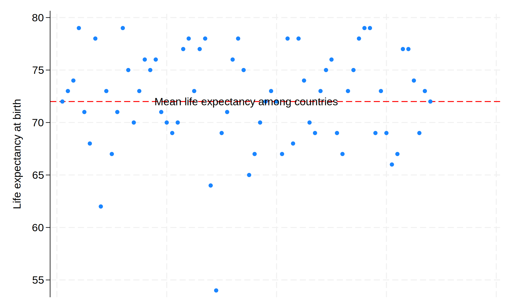

Background: A user downloads and installs a system of program files, mostly ado-files, which form the foundation of most of the commands used in Stata Programming. Using those commands and additional syntax written out sequentially in a do-file, the user creates well-formed instruction to Stata called a do-file script. Once the user runs this script, results are generated and displayed in the results window, in a graph, or in a format (.xlsx, .log, .dta, .docx, .md, LaTeX, .html, etc). The .html file format is of specific interest since its the pathway to self-publication. To illustrate how this may be achieved in Stata, we hereby introduce the dyndoc command.
Methods: We created a do-file and populated it with this abstract using markdown language. Anything in this document that is not ordinary text including <<dd_version: 2>>, <<dd_do:nooutput>>, <</dd_do>>, <<dd_display: c(N)>> is a markup. Input & output that might be numeric, string, alphanumeric, or formatted as macros are embeded at these markedup points. We then saved this document using the file extension .do; however, any text file extension will work (.txt, .md, .do, etc). To the pwd where we saved this text file, we added a cascading style sheet stmarkdown.css and header.txt to enhance the aesthetic of our .html file. Finally, we typed the following command into the Stata command window: dyndoc filename.do, saving(filename.html) replace. In the key analysis, $Y = \beta_0 + \beta_1 X$, where $Y$ is life expectancy at birth in years, the outcome or dependent variable; $X$ is the country, the predictor or independent variable being tested.
. webuse lifeexp, clear
. encode country, gen(Country)
. quietly sum lexp
. qui local lexp_mean: di %3.0f r(mean)
. quietly sum Country
. qui local Country_mean: di r(mean)
. twoway scatter lexp Country, ///
> xscale(off) ///
> yline(`lexp_mean', ///
> lc(red) ///
> lp(dash) ///
> ) ///
> text(`lexp_mean' `Country_mean' "Mean life ex
> pectancy among countries")
. graph export lexp_bycountry.png, replace

. qui {
.
. display c(N)
68
. display c(k)
7
. list in 1/5
+------------------------------------------+
1. | region | country | popgro~h |
| Europe & C. Asia | Albania | 1.2 |
|------------------------------------------|
| lexp | gnppc | safewa~r | Country |
| 72 | 810 | 76 | Albania |
+------------------------------------------+
+------------------------------------------+
2. | region | country | popgro~h |
| Europe & C. Asia | Armenia | 1.1 |
|------------------------------------------|
| lexp | gnppc | safewa~r | Country |
| 74 | 460 | . | Armenia |
+------------------------------------------+
+------------------------------------------+
3. | region | country | popgro~h |
| Europe & C. Asia | Austria | .4 |
|------------------------------------------|
| lexp | gnppc | safewa~r | Country |
| 79 | 26830 | . | Austria |
+------------------------------------------+
+------------------------------------------+
4. | region | country | popgro~h |
| Europe & C. Asia | Azerbaijan | 1.4 |
|------------------------------------------|
| lexp | gnppc | safewa~r | Country |
| 71 | 480 | . | Azerbaijan |
+------------------------------------------+
+------------------------------------------+
5. | region | country | popgro~h |
| Europe & C. Asia | Belarus | .3 |
|------------------------------------------|
| lexp | gnppc | safewa~r | Country |
| 68 | 2180 | . | Belarus |
+------------------------------------------+
Results: We identified the newly created .html file in our directory and opened it to compare its format to this markdown file. And we saw all that we had made, and behold, it was very good. Ghastly macros in the original markdown language were now rendered as neatly formatted results. There were 68 observations and 7 variables in the analyzed dataset. Average life expectancy of all countries, $\beta_0$, was 72 years. Difference in life expectancy among adjacent countries, $\beta_1$, showed no trend or pattern and was .002 years, essentially $zero$, and $p$ = .95
Conclusions: In walking you through syntax, do-file creation, queued commands, generated results, through to embedding neatly formatted output in .html, we believe you now have a sense of what that Stata might offer you. These ideas can be generalized to embedding results in .xlsx, .log, .dta, .docx, etc.